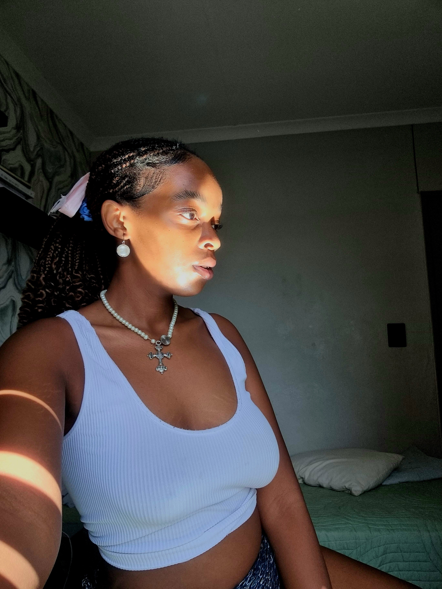
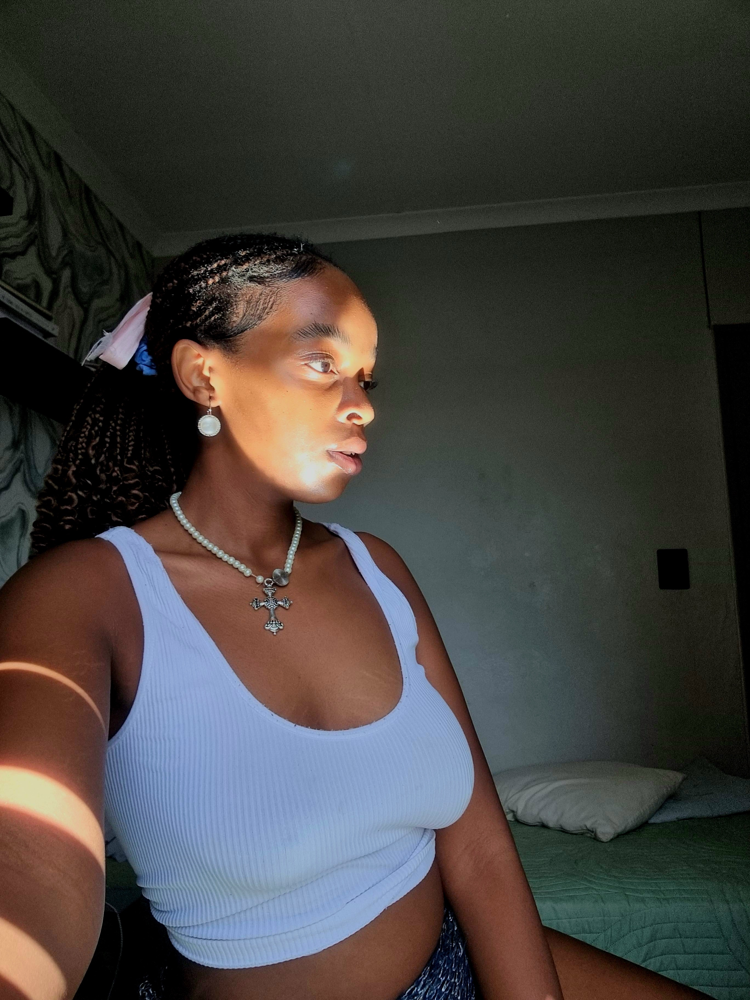

Girlthewoman
Girlthewoman is an Alternative singer, songwriter, and poet. She is known for her versatility and writing in her music. Her refreshing sound is new to the Alternative wave and will leave you in peace.
Girlthewoman is an Alternative singer, songwriter, and poet. She is known for her versatility and writing in her music. Her refreshing sound is new to the Alternative wave and will leave you in peace.
